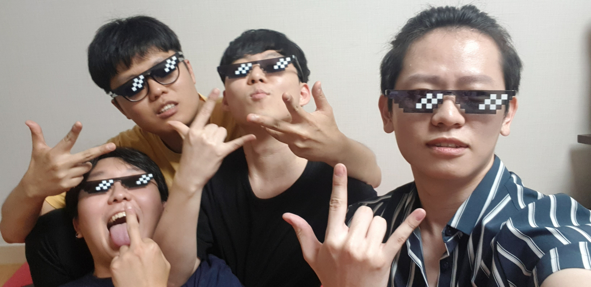

2020년 7월 12일.
이제 슬슬 봄을 밀어내는 여름의 기지게가 우리들 사이까지 침범한듯한 날씨다.
우리 허풍회의 멤버 중 5명(수, 짱, 코, 콜, 쥐)는 콜리의 집이 비는 날을 틈타 음주회를 벌이기로 했다.
더운 날씨에 몸보신이라도 될까 싶어 챙긴 인삼주와 달달한 잭다니엘 허니를 차에 싣고 짱깨와 쥐를 데리러 봉일천을 향했다.
곧 도착한 에브리마트(e-마트) 주차장에 나와있는 친구 둘을 태운 나는 바로 콜리의 집으로 출발을 했다.
"아...반대쪽으로 갔어야 했나?"
출발하자마자 길을 잘못든 어색함에 조용히 뇌까린 혼잣말.
어차피 길은 이어져있으니 대충 네비 따라가면 된다는 친구의 말에 대답해줘서 고맙다는 듯이 고개를 끄덕여본다.
자, 이 날은 저희들이 술을 아주 많이 마셨던 날입니다.
결국 마지막에 가서는 다같이 8-bit thug선글라스를 착용하고 편의점에 갈정도로 미쳤었죠!
하지만 코는 함께하지 못했습니다.
집에 빨리가야 한다며 먼저 자리를 떴기 때문이죠.
아! 콜리도 취해서 자느라 함께 하지 못했습니다!
